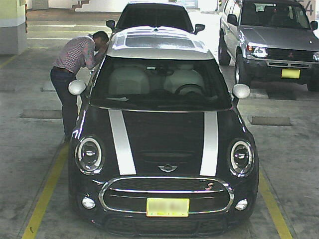

Sistema de detección de actividades inusuales a partir de técnicas de procesamiento de imágenes
DESCRIPCIÓN
El CCTV es una de las herramientas más utilizadas dentro de las compañías de seguridad,
gracias a que proporcionan registros de video y optimizan las labores del personal de seguridad.
Para el control y la gestión de los sistemas CCTV, las compañías suelen tener centros de monitoreo que recopilan
la información de múltiples cámaras y las despliegan por medio de un arreglo de pantallas. Los centros de monitoreo
son controlados por operadores de medios tecnológicos, los cuales están encargados del monitoreo constante de las cámaras,
el control de alarmas y la coordinación de actividades.
En este trabajo se propone ACT-CCTV, un sistema para la detección automática de actividades inusuales a partir del uso de CCTV,
el cual busca brindar ayudas tecnológicas que permitan al vigilante realizar un trabajo de mayor calidad.
El desarrollo del sistema se encuentra basado en un modelo orientado a agentes racionales,
brindando un grado de novedad al manejar e integrar múltiples cámaras con un enfoque distribuido
y el uso de estrategias colaborativas.

Actividad inusual
OBJETIVOS
Objetivo General
Diseñar un sistema para la identificación de actividades inusuales, a partir de imágenes pre-procesadas,
mediante del uso de técnicas de inteligencia artificial, que pueda ser aplicado a sistemas CCTV instalados
en recintos cerrados.
Objetivos Específicos
Analizar, a partir del estado del arte, las técnicas actuales de identificación de actividades inusuales,
evaluando su aplicabilidad para el contexto de sistemas CCTV instalados en recintos cerrados.
Diseñar un modelo basado en agentes racionales, a partir del empleo de imágenes pre-procesadas provenientes
de múltiples cámaras, para la identificación de actividades inusuales a través del uso de estrategias cooperativas y técnicas de reconocimiento de patrones.
Evaluar el desempeño, la precisión y usabilidad del modelo propuesto, a través de su implementación parcial en un
sistema CCTV enmarcado dentro del contexto colombiano de seguridad y vigilancia.